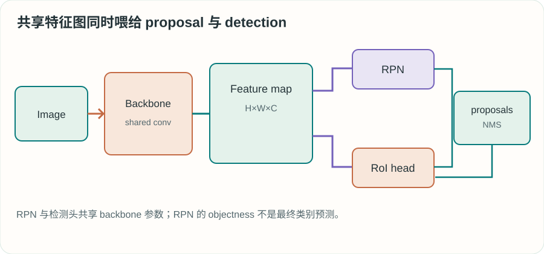
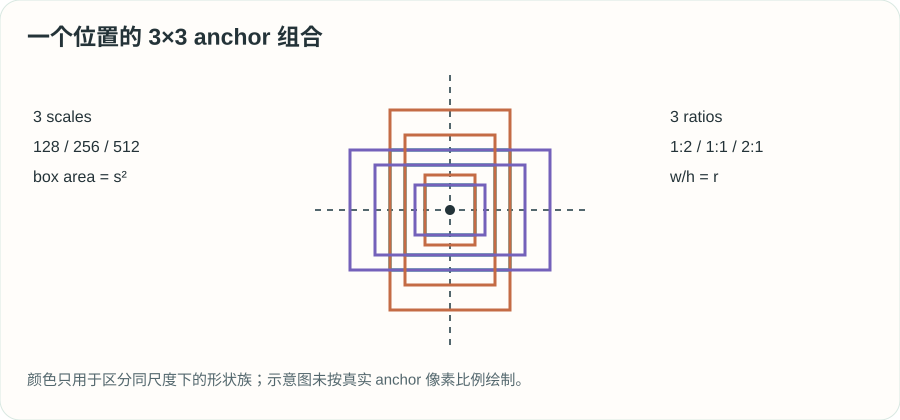
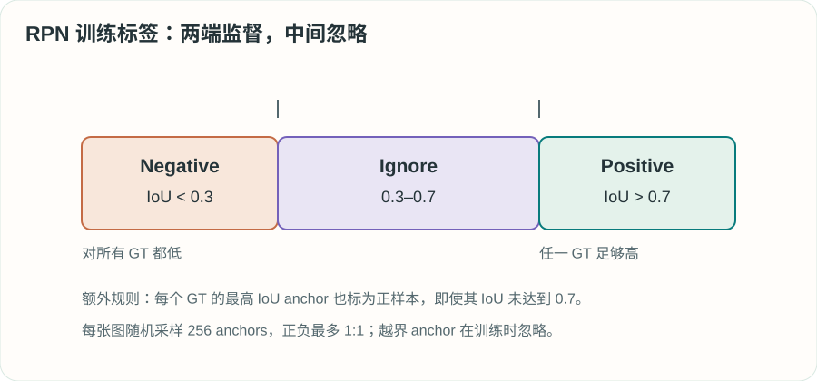

CHAPTER 18 · 目标检测
Faster R-CNN：让区域提议网络学会在哪里看
Faster R-CNN 用共享卷积特征上的 Region Proposal Network 替代外部候选框算法。理解 anchor、IoU 标签、objectness 与框回归，才能看懂它为何能把 proposal 和检测头连成一体。
把 proposal 生成也变成一个神经网络任务
Fast R-CNN 共享了卷积特征，但它仍依赖 Selective Search。Faster R-CNN 的关键观察是：proposal 和最终检测都需要理解同一张图像的卷积特征，既然 feature map 已经算出来，就可以在其上训练一个轻量的区域提议网络，而不是再调用 CPU 上的手工分组算法。
Region Proposal Network（RPN）是一个全卷积网络：在共享 feature map 上滑动一个小窗口，每个位置同时预测多个 anchor 的 objectness（前景/背景）分数与框偏移。RPN 输出的 proposal 再交给 Fast R-CNN 风格的 RoI 检测头。两个模块共享 backbone 特征，proposal 生成与分类定位因此形成一套联合系统。

Anchor：用固定参考框把任意形状的回归问题参数化
RPN 在每个 feature-map 位置放置一组 anchor。原始论文使用 3 个尺度和 3 个宽高比，形成每个位置 9 个参考框：面积对应 (128^2,256^2,512^2)，宽高比为 (1:1,1:2,2:1)。anchor 的中心位于当前滑窗位置；尺度与宽高比负责覆盖不同大小和形状。它不是“模型预测出的框”，而是回归和分类的参考坐标。

s 是 anchor 的等效边长（面积为 s²），r 是宽高比 w/h。该参数化保持 w×h=s²。
若 feature map 有 (H×W) 个位置，anchor 数量就是 (H×W×9)。原论文举例的约 1000×600 输入、约 60×40 的 feature map，会产生约 20,000 个 anchor；训练时越界 anchor 会被忽略，推理时预测框可裁剪到图像边界。
RPN 的两个 sibling heads：2A 个 objectness logits 与 4A 个偏移
设每个位置有 (A=9) 个 anchor。RPN 的共享 3×3 小卷积窗口后分成两个 1×1 卷积头：分类头输出每个 anchor 的前景/背景两个分数，共 (2A=18) 个通道；回归头输出每个 anchor 的四个坐标偏移，共 (4A=36) 个通道。每个位置的预测与该位置的 9 个 anchor 一一对应。
偏移仍使用中心平移归一化到 anchor 宽高、宽高取对数比例的参数化。RPN 的 objectness 不是最终物体类别概率，它只判断“这里像不像一个物体”。第二阶段检测头再从 proposal 中判断具体类别并进一步修正框。
t 是相对于 anchor 的目标偏移；x,y 是中心，w,h 是宽高。解码时执行逆变换。
生成 proposal 时，RPN 根据 objectness 排序，解码 anchor，裁剪到图像范围，过滤过小框，再做 NMS 以移除高度重叠的候选。原论文在 proposal NMS 中使用 IoU 阈值 0.7；具体 top-N 数量是训练/测试设置的一部分，不应视为算法常数。
Anchor 如何获得正样本、负样本或忽略标签？
RPN 训练需要把大量 anchor 分配给 ground-truth boxes。原论文把两类 anchor 设为正样本：与某个真值框 IoU 最高的 anchor（即使它没有达到 0.7），以及与任意真值框 IoU 大于 0.7 的 anchor。若一个 anchor 对所有真值框的 IoU 都低于 0.3，则设为负样本。处于中间区域的 anchor 不参与 loss。

为了避免背景 anchor 数量压倒正样本，论文每张图随机采样 256 个 anchor 计算 mini-batch loss，正负比例最多 1:1；正样本不足时用负样本补齐。分类项对正负样本都计算，回归项只对正样本计算。这个采样规则是训练目标的一部分，而不是推理时保留 proposal 的规则。
RPN 多任务目标的结构：objectness 分类 + 仅对正 anchor 激活的 Smooth L1 框回归。N_cls、N_reg 是各项归一化因子。
共享 backbone 并不意味着原论文训练只有一次反向传播
Faster R-CNN 论文讨论了 alternating training、approximate joint training 和 non-approximate joint training。论文实验采用四步交替训练：先训练 RPN；用其 proposals 训练 Fast R-CNN 检测器；再以检测器初始化 RPN，固定共享层微调 RPN 独有层；最后固定共享层微调 Fast R-CNN 独有层。完成后，RPN 与检测头共享同一组卷积层。
论文也讨论了 approximate joint training：在一次 SGD 迭代中同时计算 RPN 与检测器损失，共享层梯度相加，但把 RPN 产生的 proposal 当作固定输入，忽略了 loss 对 proposal 坐标的梯度，因此是近似联合训练。现代实现常使用更简洁的联合训练方式，但不能把它倒写成原论文所有实验采用的训练方案。
可运行实验：9 个 Anchor、RPN 通道与标签分配
下面用一个中心点生成 9 个 anchor，并验证宽高比与面积。第二段代码实现论文中的正/负/忽略标签阈值，显式加入“每个真值的最高 IoU anchor 也设正”的例外。它不执行完整 RPN、NMS 或图像特征提取。
import math
def make_anchors(cx, cy, scales=(128,256,512), ratios=(0.5,1.0,2.0)):
anchors = []
for scale in scales:
for ratio in ratios: # width / height
w = scale * math.sqrt(ratio)
h = scale / math.sqrt(ratio)
anchors.append((cx-w/2, cy-h/2, cx+w/2, cy+h/2))
assert abs(w*h - scale*scale) < 1e-8
return anchors
anchors = make_anchors(320, 192)
assert len(anchors) == 9
assert len(set((round(a[2]-a[0],2), round(a[3]-a[1],2))
for a in anchors)) == 9
print("anchors per location:", len(anchors))def assign_anchor_labels(max_iou, best_for_each_gt=()):
# -1 = ignore, 0 = negative, 1 = positive
labels = [-1] * len(max_iou)
for index in best_for_each_gt:
labels[index] = 1
for i, overlap in enumerate(max_iou):
if overlap > 0.7:
labels[i] = 1
elif overlap < 0.3 and labels[i] != 1:
labels[i] = 0
return labels
labels = assign_anchor_labels(
[0.05, 0.25, 0.45, 0.75, 0.65],
best_for_each_gt=[2]
)
assert labels == [0, 0, 1, 1, -1]
assert 2 in [i for i, value in enumerate(labels) if value == 1]
print("labels:", labels)从原始 Faster R-CNN 到 FPN、RoIAlign 的边界
Faster R-CNN 的贡献是让 proposal generation 变成共享 feature map 上的学习任务，但原始单尺度 anchor 与 backbone 对不同物体尺度的覆盖能力仍受特征分辨率影响。Feature Pyramid Networks（FPN）后来在多个 backbone stage 上构造语义强、分辨率不同的特征层，使检测头可以从适合尺度的层取 RoI 特征。Torchvision 的 MultiScaleRoIAlign 实现了这类多层 RoI 汇聚。
Mask R-CNN 则指出 RoI Pooling 的边界量化会损害像素级 mask 的空间对齐，提出 RoIAlign 用双线性插值保留连续坐标。把 FPN、RoIAlign 或现代 anchor-free proposal 方案讲成 Faster R-CNN 2015 年原论文已经具备的模块，会混淆架构演进。
理解检查：RPN 的 objectness=0.9，是否表示 proposal 属于“猫”的概率为 90%？
不是。RPN 只区分 object / background；具体类别概率由第二阶段分类头输出。
原始论文与技术文档
文中 anchor、IoU 和 loss 样例是可验证的教学构造，不是完整训练复现；FPN 与 RoIAlign 等现代扩展已与 2015 年原始 Faster R-CNN 分开说明。